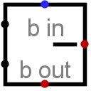

Subtractor
| Library: | Arithmetic |
| Introduced: | 2.0 Beta 11 |
| Appearance: |  |
Behavior
This component subtracts values coming in via the west inputs (the upper minus the lower) and outputs the difference on the east output. The component is designed so that it can be cascaded with other subtractors to provide subtract more bits than is possible with a single subtractor: The borrow-in input provides a one-bit value to be borrowed out of the difference (if the borrow-in input is specified), and a borrow-out output indicates whether the component needs to borrow an upper-order bit to complete the subtraction without underflow (assuming unsigned subtraction).
Internally, the subtractor simply performs a bitwise NOT on the subtrahend, and add this to the minuend along with the NOT of the borrow-in input. (The minuend is the first operand (upper input) to the subtraction, and the subtrahend is the second (lower input). I happen to like the antiquated terms.)
If either of the operands contains some floating bits or some error bits, then the component will perform a partial subtraction. That is, it will compute as many low-order bits as possible. But above the floating or error bit, the result will have floating or error bits.
Pins
- West edge, north end (input, bit width matches Data Bits attribute)
- The minuend of the subtraction; that is, the number from which to subtract.
- West edge, south end (input, bit width matches Data Bits attribute)
- The subtrahend of the subtraction; that is, the number to subtract from the minuend.
- North edge, labeled b in (input, bit width 1)
- If 1, then 1 is borrowed out of the difference. If the value is unknown (i.e., floating), then it is assumed to be 0.
- East edge (output, bit width matches Data Bits attribute)
- The lower dataBits bits of the difference of the two values coming in the west edge, minus the bin bit.
- South edge, labeled b out (output, bit width 1)
- The borrow bit computed for the difference. If the values subtracted as unsigned values yield a negative value, then this bit will be 1; otherwise, it will be 0.
Attributes
When the component is selected or being added, Alt-0 throught Alt-9 alter its Data Bits attribute.
- Data Bits
- The bit width of the values to be subtracted and of the result.
Poke Tool Behavior
None.
Text Tool Behavior
None.
Back to Library Reference